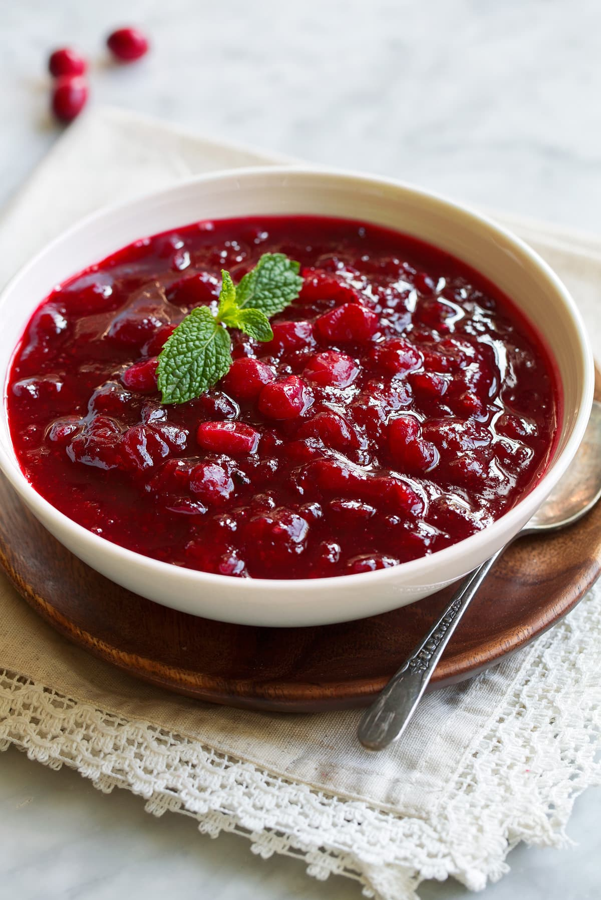

Cranberry Sauce Recipe

Image of a bowl of cranberry sauce
This cranberry sauce recipe uses fresh cranberries, sugar, and orange juice to make a Thanksgiving classic.
Ingredients
- 12 ounces of cranberries
- 1 cup of white sugar
- 1 cup of orange juice
Steps
- Gather all ingredients.
- Dissolve sugar in the orange juice in a medium saucepan over medium heat.
- Stir in the cranberries and cook until they start to pop, about 10 minutes.
- Remove from heat and place in a bowl. It will thicken as it cools.
- Enjoy!